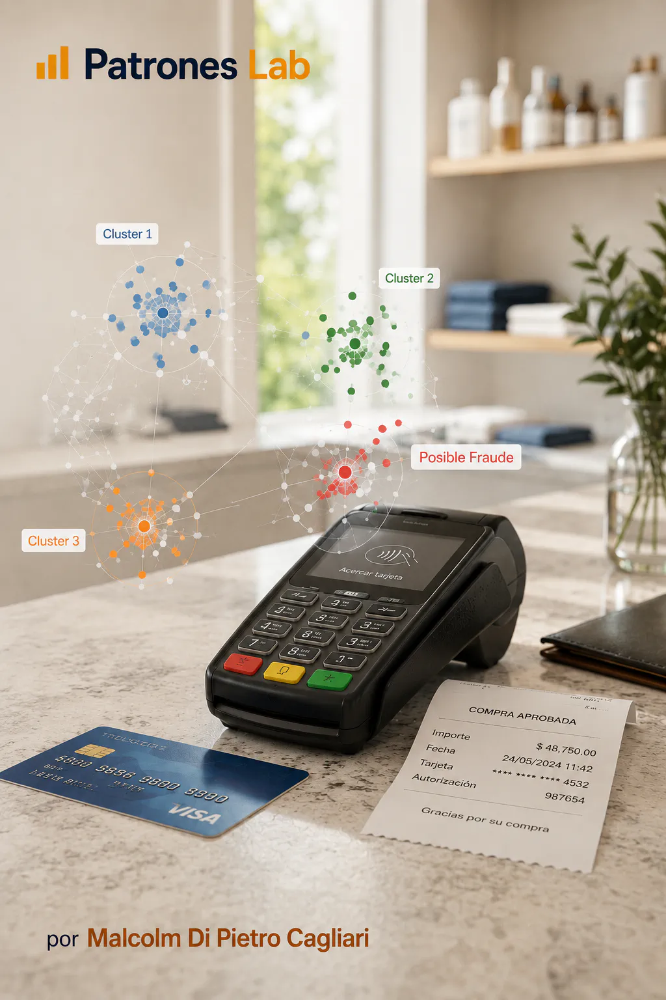
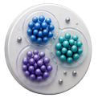

MACHINE LEARNING · PROJECT 09

Project 08 · Machine learning
Machine Learning Model · Fraud with K-means
Unsupervised K-means clustering applied to credit card fraud detection.

CONTEXT AND OBJECTIVE
Explore whether an unsupervised technique can separate transactional behaviors compatible with fraud patterns.
DATA AND DIAGNOSIS
- Transactional variables are used to build behavioral groups.
- K-means is applied to segment observations without using a prior label.
- Cluster profiles are read to identify segments with atypical signals.
DELIVERY AND LEARNING
The delivery compares an SPSS Modeler implementation and a Python version, showing the value of clustering as an exploratory tool for fraud.